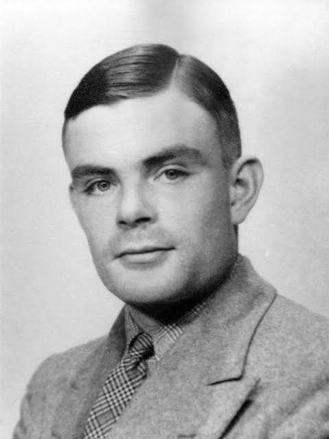

CIENTISTAS DA COMPUTAÇÃO
Alan Turing

Computabilidade e inteligência artificial
Em 1936, Alan Turing apresentou um modelo abstrato de computação que hoje chamamos de máquina de Turing. Seu trabalho ajudou a formalizar o que significa calcular e a investigar os limites dos algoritmos. Também participou da criptoanálise britânica durante a Segunda Guerra Mundial.
Conexão com a sala de aula: Ao estudar um algoritmo, pergunte se ele resolve o problema para qualquer entrada válida e se sempre termina.